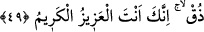
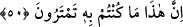

nüfüz eder, bağırsak ve diğer iç organlarını parçalar, ayaklarından çıkar. Âyette,
ateşlerin dibinde hasret, mahrûmiyet ve ayrılık ateşine yanmaya işâret edilmektedir.
49. “(ve deyin ki:) Tat bakalım, hani sen üstündün, şerefliydin.”
“Tat” bu zillet verici ve alçaltıcı azâbı “hani sen üstündün” kendince üstündün ve
kavminin nezdinde “şerefliydin.” Yani alay ve başa kakma tarzında ona böyle söylerler.
Çünkü kendince üstün ve şerefliydi. Bunun mânâsı alçak ve bayağı, demektir.
Rivâyete göre Ebû Cehil Peygamberimiz’e (s.a.), “Mekke’nin dağları arasında
benden daha üstün ve şerefli biri yoktur. Allah’a yemin olsun ki, ne sen bana bir şey
yapabilirsin, ne de Rabbin” dedi. İşte bu âyet bunun üzerine Ebû Cehil ve benzerlerine
bir tehdid olarak geldi. Hayret! Hem Allah’a tâzîm ederek yemin ediyor, hem de
Allah’ın gücünü kabul etmiyor. Halbuki Peygamberimiz (s.a.) onu yemin ettiği Allah’tan
başkasına dâvet etmiyordu ki! İşte bu gibi sözler küfür şaşkınlığı, cehâlet hükmü ve
nefsî taassuptan başka bir şey değildir.
Bunlar şöyle de demişlerdir: “Allahım! Eğer bu senin yanından gelmiş bir
hakîkatse başımıza gökten taş yağdır. Yahut bize acı bir azap getir.” (el-Enfâl, 8/32)
Burada zevk kökünden gelen “ /zük” kelimesinin kullanılmasında şöyle işârî bir mânâ
vardır: Esasen bu insan dünyâda azâba dûçâr olmuştu. Ancak gaflet uykusunda
olduğundan ve gözlerindeki perde kalınlığından dolayı azâbın acısını hissetmiyordu.
Ölünce artık uyanıp kendi nefsine zulmetmenin elem ve acısını tadacaktır.
50. İşte o kuşkulanıp durduğunuz şey budur!”
“İşte o kuşkulanıp durduğunuz”; dünyâda şüphe ettiğiniz, yahud bâtıl yollarla
mücâdele ettiğiniz “şey”; azâb “budur!” “Şüphe ediyordunuz, fakat şimdi âyân beyân
bir şekilde görünüz.” Sonra bu şüphe şeytanın vesvesesi ve nefsin kuruntularından
kaynaklanmaktadır. Bunları bertaraf etmeli, kalbe yakışan sıfata bürünmelidir; O da
kesin inanç demek olan yakîndir. Bundan dolayı Peygamberimiz (s.a.) şöyle
buyurmuştur: “Allah hakkında şüphe edenlere yazıklar olsun! Bunlar Allah’a yakinen
(kesin olarak) inanmamışlardır.”[217] Allah’ın bazı emir ve hükümlerini inkâr etmek de
bu kabildendir. Yine hiç aldırıp önemsemeden bir takım mâsıyetlerde ısrar etmek de
aynıdır. Mesela bir insan kasden namazı terk ediyor, kazâ etmeye de hiç niyetli olmuyor
ve buna karşılık Allah’ın azâbından da endişe duymuyorsa bu insan inkâra düşmüş olur.